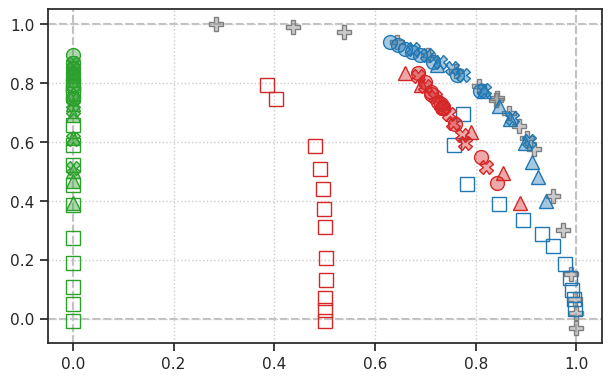
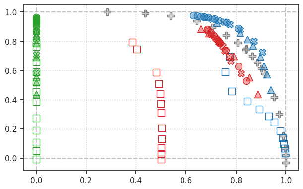
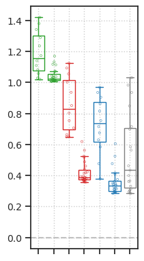
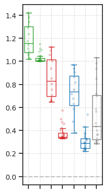
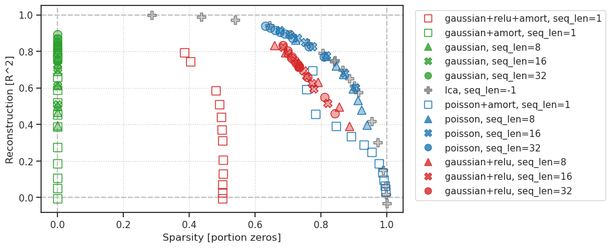
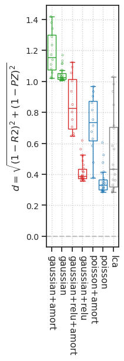
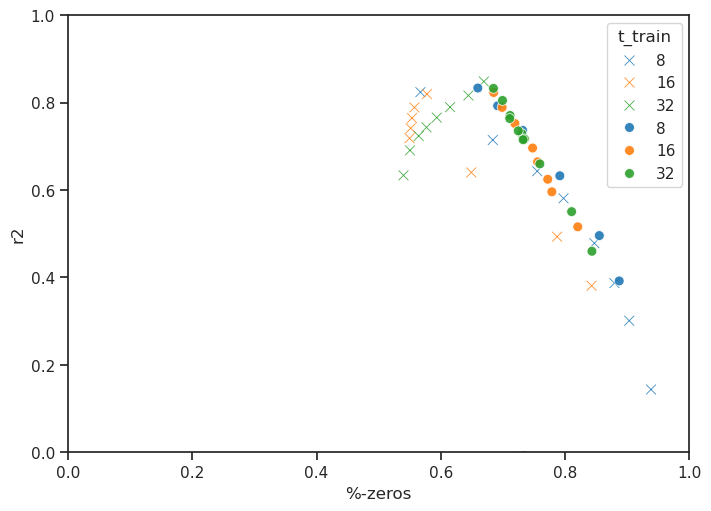
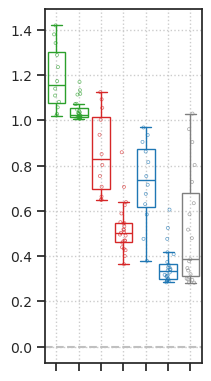
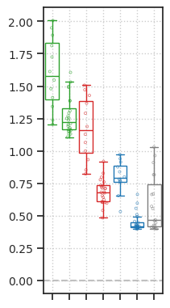
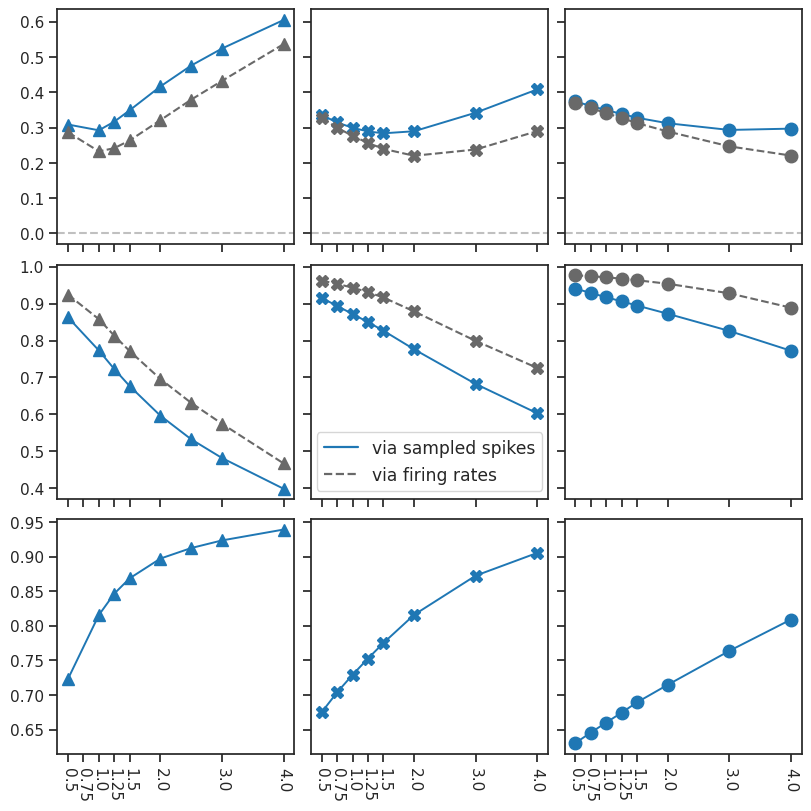

Fig: rate-distortion#
project = iP-VAE, host = any, device = cuda:1
Motivation:
Results & Figs dir#
pal_models = get_palette_models()
results_dir = pjoin(tmp_dir, 'results_2025-03')
figs_dir = pjoin(fig_base_dir, 'figs_2025-03', 'ratedist')
os.makedirs(results_dir, exist_ok=True)
os.makedirs(figs_dir, exist_ok=True)
len(os.listdir(results_dir)), len(os.listdir(figs_dir))
(624, 12)
df: rate-distortion#
# original fits (npy files)
files = [
pjoin(results_dir, f)
for f in os.listdir(results_dir) if (
any(x in f for x in ('vH16', 'lca')) and
all(x not in f for x in ('softplus', 'sigmoid')))
]
files = sorted(files, key=alphanum_sort_key)
print(len(files))
# remove g+relu
files = [f for f in files if 'gaussian+relu' not in f]
# new g+relu fits
results_dir_new_grelu = pjoin(tmp_dir, 'results_2025-04')
files_new_grelu = [
pjoin(results_dir_new_grelu, f)
for f in os.listdir(results_dir_new_grelu) if
all(e in f for e in ['gaussian+relu', 'vH16-wht', '-665'])
]
files_new_grelu = sorted(files_new_grelu, key=alphanum_sort_key)
len(files), len(files_new_grelu)
147
(123, 32)
# merge
files = files + files_new_grelu
len(files)
155
df_ratedist = _load_df(files)
df_ratedist.shape
100%|█████████████████████████████████████████| 155/155 [00:07<00:00, 21.85it/s]
(129, 11)
print(collections.Counter(df_ratedist['str_model']))
Counter({ 'gaussian+relu+amort': 12, 'gaussian+amort': 12, 'gaussian': 24, 'lca': 19, 'poisson+amort': 12, 'poisson': 24, 'gaussian+relu': 26 })
save_obj(
obj=df_ratedist,
file_name='df_ratedist',
save_dir='/home/hadi/Dropbox/git/IterativeVAE/results',
mode='df',
)
[PROGRESS] 'df_ratedist.df' saved at /home/hadi/Dropbox/git/IterativeVAE/results
df_previous = 'Dropbox/git/IterativeVAE/results/df_ratedist_old.df'
df_previous = pd.read_pickle(add_home(df_previous))
df_previous.shape
(139, 11)
main figs#
from figures.final import fig_ratedist_box, fig_ratedist_scatter
fig = fig_ratedist_scatter(df_ratedist, 'r2')
save_fig('ratedist_scatter.pdf', figs_dir, fig)
fig = fig_ratedist_scatter(df_ratedist, 'r2_map')
save_fig('ratedist_scatter_map.pdf', figs_dir, fig)


'/home/hadi/Dropbox/git/jb-progress-2025/figs/figs_2025-03/ratedist/ratedist_scatter_map.pdf'
fig = fig_ratedist_box(df_ratedist, 'distance')
save_fig('ratedist_box.pdf', figs_dir, fig)
fig = fig_ratedist_box(df_ratedist, 'distance_map')
save_fig('ratedist_box_map.pdf', figs_dir, fig)


'/home/hadi/Dropbox/git/jb-progress-2025/figs/figs_2025-03/ratedist/ratedist_box_map.pdf'
_ = fig_ratedist_scatter(df_ratedist, labels=True, figsize=(10, 4))
_ = fig_ratedist_box(df_ratedist, labels=True, figsize=(2, 6))


df_ratedist.sort_values(by='distance')
| type | latent_act | str_model | seq_len | kl_beta | amort | %-zeros | r2 | r2_map | distance | distance_map | |
|---|---|---|---|---|---|---|---|---|---|---|---|
| 91 | poisson | None | poisson | 16 | 24.0 | False | 0.775022 | 0.826882 | 0.916790 | 0.283875 | 0.239873 |
| 53 | None | None | lca | -1 | 0.5 | False | 0.806463 | 0.791479 | 0.791479 | 0.284495 | 0.284495 |
| 52 | None | None | lca | -1 | 0.4 | False | 0.761231 | 0.842454 | 0.842454 | 0.286062 | 0.286062 |
| 90 | poisson | None | poisson | 16 | 20.0 | False | 0.752643 | 0.850000 | 0.931343 | 0.289284 | 0.256709 |
| 92 | poisson | None | poisson | 16 | 32.0 | False | 0.815906 | 0.776233 | 0.879043 | 0.289763 | 0.220275 |
| ... | ... | ... | ... | ... | ... | ... | ... | ... | ... | ... | ... |
| 12 | gaussian | None | gaussian+amort | 1 | 1.6 | True | 0.000000 | 0.275132 | 0.275132 | 1.235085 | 1.235085 |
| 19 | gaussian | None | gaussian+amort | 1 | 2.0 | True | 0.000000 | 0.187437 | 0.187437 | 1.288510 | 1.288510 |
| 17 | gaussian | None | gaussian+amort | 1 | 2.5 | True | 0.000000 | 0.106347 | 0.106347 | 1.341125 | 1.341125 |
| 21 | gaussian | None | gaussian+amort | 1 | 3.0 | True | 0.000000 | 0.049898 | 0.049898 | 1.379382 | 1.379382 |
| 23 | gaussian | None | gaussian+amort | 1 | 4.0 | True | 0.000000 | -0.006731 | -0.006731 | 1.418981 | 1.418981 |
129 rows × 11 columns
df_pois = df_ratedist.loc[df_ratedist['str_model'] == 'poisson']
df_pois = df_pois.sort_values(by='distance')
df_pois[:10]
| type | latent_act | str_model | seq_len | kl_beta | amort | %-zeros | r2 | r2_map | distance | distance_map | |
|---|---|---|---|---|---|---|---|---|---|---|---|
| 91 | poisson | None | poisson | 16 | 24.0 | False | 0.775022 | 0.826882 | 0.916790 | 0.283875 | 0.239873 |
| 90 | poisson | None | poisson | 16 | 20.0 | False | 0.752643 | 0.850000 | 0.931343 | 0.289284 | 0.256709 |
| 92 | poisson | None | poisson | 16 | 32.0 | False | 0.815906 | 0.776233 | 0.879043 | 0.289763 | 0.220275 |
| 80 | poisson | None | poisson | 8 | 8.0 | False | 0.815630 | 0.773012 | 0.857893 | 0.292431 | 0.232780 |
| 101 | poisson | None | poisson | 32 | 96.0 | False | 0.763749 | 0.825974 | 0.928115 | 0.293428 | 0.246946 |
| 102 | poisson | None | poisson | 32 | 128.0 | False | 0.809028 | 0.772332 | 0.889128 | 0.297158 | 0.220823 |
| 89 | poisson | None | poisson | 16 | 16.0 | False | 0.729082 | 0.872029 | 0.943479 | 0.299622 | 0.276751 |
| 79 | poisson | None | poisson | 8 | 4.0 | False | 0.723470 | 0.862664 | 0.924345 | 0.308755 | 0.286692 |
| 100 | poisson | None | poisson | 32 | 64.0 | False | 0.714716 | 0.872606 | 0.954010 | 0.312436 | 0.288968 |
| 88 | poisson | None | poisson | 16 | 12.0 | False | 0.703835 | 0.893830 | 0.953737 | 0.314620 | 0.299756 |
df_lca = df_ratedist.loc[df_ratedist['str_model'] == 'lca']
df_lca = df_lca.sort_values(by='distance')
df_lca[:10]
| type | latent_act | str_model | seq_len | kl_beta | amort | %-zeros | r2 | r2_map | distance | distance_map | |
|---|---|---|---|---|---|---|---|---|---|---|---|
| 53 | None | None | lca | -1 | 0.5 | False | 0.806463 | 0.791479 | 0.791479 | 0.284495 | 0.284495 |
| 52 | None | None | lca | -1 | 0.4 | False | 0.761231 | 0.842454 | 0.842454 | 0.286062 | 0.286062 |
| 66 | None | None | lca | -1 | 0.7 | False | 0.842296 | 0.750784 | 0.750784 | 0.294922 | 0.294922 |
| 55 | None | None | lca | -1 | 0.6 | False | 0.841202 | 0.742867 | 0.742867 | 0.302216 | 0.302216 |
| 51 | None | None | lca | -1 | 0.3 | False | 0.705943 | 0.893882 | 0.893882 | 0.312619 | 0.312619 |
| 56 | None | None | lca | -1 | 0.7 | False | 0.866441 | 0.697351 | 0.697351 | 0.330809 | 0.330809 |
| 50 | None | None | lca | -1 | 0.2 | False | 0.643730 | 0.941243 | 0.941243 | 0.361083 | 0.361083 |
| 57 | None | None | lca | -1 | 0.8 | False | 0.886253 | 0.653120 | 0.653120 | 0.365054 | 0.365054 |
| 58 | None | None | lca | -1 | 0.9 | False | 0.901844 | 0.612868 | 0.612868 | 0.399382 | 0.399382 |
| 59 | None | None | lca | -1 | 1.0 | False | 0.914711 | 0.575066 | 0.575066 | 0.433409 | 0.433409 |
df_gausrelu = df_ratedist.loc[df_ratedist['str_model'] == 'gaussian+relu']
df_gausrelu = df_gausrelu.sort_values(by='distance')
df_gausrelu[:10]
| type | latent_act | str_model | seq_len | kl_beta | amort | %-zeros | r2 | r2_map | distance | distance_map | |
|---|---|---|---|---|---|---|---|---|---|---|---|
| 118 | gaussian | relu | gaussian+relu | 32 | 1.0 | False | 0.684520 | 0.832819 | 0.881685 | 0.357039 | 0.336936 |
| 119 | gaussian | relu | gaussian+relu | 32 | 2.0 | False | 0.699109 | 0.805200 | 0.862105 | 0.358444 | 0.330984 |
| 109 | gaussian | relu | gaussian+relu | 16 | 1.0 | False | 0.684908 | 0.823398 | 0.874170 | 0.361208 | 0.339288 |
| 110 | gaussian | relu | gaussian+relu | 16 | 2.0 | False | 0.698502 | 0.789289 | 0.849595 | 0.367832 | 0.336931 |
| 120 | gaussian | relu | gaussian+relu | 32 | 4.0 | False | 0.711251 | 0.770802 | 0.836219 | 0.368657 | 0.331964 |
| 104 | gaussian | relu | gaussian+relu | 8 | 2.0 | False | 0.691296 | 0.793001 | 0.853826 | 0.371681 | 0.341563 |
| 123 | gaussian | relu | gaussian+relu | 32 | 16.0 | False | 0.710713 | 0.763819 | 0.836510 | 0.373455 | 0.332289 |
| 111 | gaussian | relu | gaussian+relu | 16 | 4.0 | False | 0.719049 | 0.752328 | 0.820113 | 0.374533 | 0.333606 |
| 105 | gaussian | relu | gaussian+relu | 8 | 4.0 | False | 0.731499 | 0.736639 | 0.803898 | 0.376101 | 0.332489 |
| 103 | gaussian | relu | gaussian+relu | 8 | 1.0 | False | 0.659369 | 0.833640 | 0.885252 | 0.379085 | 0.359440 |
df_gaus = df_ratedist.loc[df_ratedist['str_model'] == 'gaussian']
df_gaus = df_gaus.sort_values(by='distance')
df_gaus[:10]
| type | latent_act | str_model | seq_len | kl_beta | amort | %-zeros | r2 | r2_map | distance | distance_map | |
|---|---|---|---|---|---|---|---|---|---|---|---|
| 40 | gaussian | None | gaussian | 32 | 8.0 | False | 0.000000e+00 | 0.893817 | 0.963993 | 1.005622 | 1.000648 |
| 32 | gaussian | None | gaussian | 16 | 8.0 | False | 0.000000e+00 | 0.869414 | 0.960687 | 1.008490 | 1.000772 |
| 41 | gaussian | None | gaussian | 32 | 16.0 | False | 0.000000e+00 | 0.868435 | 0.954079 | 1.008618 | 1.001054 |
| 42 | gaussian | None | gaussian | 32 | 24.0 | False | 0.000000e+00 | 0.850356 | 0.945303 | 1.011135 | 1.001495 |
| 33 | gaussian | None | gaussian | 16 | 12.0 | False | 7.567026e-08 | 0.849168 | 0.949951 | 1.011311 | 1.001252 |
| 24 | gaussian | None | gaussian | 8 | 4.0 | False | 0.000000e+00 | 0.840663 | 0.941861 | 1.012615 | 1.001689 |
| 43 | gaussian | None | gaussian | 32 | 32.0 | False | 0.000000e+00 | 0.835605 | 0.937093 | 1.013423 | 1.001977 |
| 34 | gaussian | None | gaussian | 16 | 16.0 | False | 0.000000e+00 | 0.831270 | 0.938064 | 1.014135 | 1.001916 |
| 44 | gaussian | None | gaussian | 32 | 40.0 | False | 0.000000e+00 | 0.822558 | 0.929143 | 1.015621 | 1.002507 |
| 45 | gaussian | None | gaussian | 32 | 48.0 | False | 0.000000e+00 | 0.809685 | 0.920141 | 1.017949 | 1.003184 |
print best amort#
amort_list = ['poisson+amort', 'gaussian+relu+amort', 'gaussian+amort']
for item in amort_list:
_df = df_ratedist.loc[df_ratedist['str_model'] == item]
_df = _df.sort_values(by='distance')
_df = _df[:5]
display(_df)
| type | latent_act | str_model | seq_len | kl_beta | amort | %-zeros | r2 | r2_map | distance | distance_map | |
|---|---|---|---|---|---|---|---|---|---|---|---|
| 68 | poisson | None | poisson+amort | 1 | 0.01 | True | 0.773717 | 0.696139 | 0.696139 | 0.378861 | 0.378861 |
| 67 | poisson | None | poisson+amort | 1 | 0.10 | True | 0.755959 | 0.591308 | 0.591308 | 0.476010 | 0.476010 |
| 69 | poisson | None | poisson+amort | 1 | 0.40 | True | 0.783155 | 0.457970 | 0.457970 | 0.583796 | 0.583796 |
| 70 | poisson | None | poisson+amort | 1 | 0.60 | True | 0.846816 | 0.389634 | 0.389634 | 0.629295 | 0.629295 |
| 71 | poisson | None | poisson+amort | 1 | 0.80 | True | 0.892864 | 0.333790 | 0.333790 | 0.674769 | 0.674769 |
| type | latent_act | str_model | seq_len | kl_beta | amort | %-zeros | r2 | r2_map | distance | distance_map | |
|---|---|---|---|---|---|---|---|---|---|---|---|
| 1 | gaussian | relu | gaussian+relu+amort | 1 | 0.01 | True | 0.384793 | 0.793853 | 0.793853 | 0.648827 | 0.648827 |
| 0 | gaussian | relu | gaussian+relu+amort | 1 | 0.10 | True | 0.403526 | 0.744587 | 0.744587 | 0.648858 | 0.648858 |
| 4 | gaussian | relu | gaussian+relu+amort | 1 | 0.40 | True | 0.481114 | 0.587210 | 0.587210 | 0.663052 | 0.663052 |
| 6 | gaussian | relu | gaussian+relu+amort | 1 | 0.60 | True | 0.491640 | 0.509590 | 0.509590 | 0.706351 | 0.706351 |
| 9 | gaussian | relu | gaussian+relu+amort | 1 | 0.80 | True | 0.496771 | 0.439096 | 0.439096 | 0.753560 | 0.753560 |
| type | latent_act | str_model | seq_len | kl_beta | amort | %-zeros | r2 | r2_map | distance | distance_map | |
|---|---|---|---|---|---|---|---|---|---|---|---|
| 3 | gaussian | None | gaussian+amort | 1 | 0.01 | True | 0.0 | 0.794783 | 0.794783 | 1.020840 | 1.020840 |
| 2 | gaussian | None | gaussian+amort | 1 | 0.10 | True | 0.0 | 0.762767 | 0.762767 | 1.027755 | 1.027755 |
| 5 | gaussian | None | gaussian+amort | 1 | 0.40 | True | 0.0 | 0.657369 | 0.657369 | 1.057070 | 1.057070 |
| 7 | gaussian | None | gaussian+amort | 1 | 0.60 | True | 0.0 | 0.588263 | 0.588263 | 1.081447 | 1.081447 |
| 8 | gaussian | None | gaussian+amort | 1 | 0.80 | True | 0.0 | 0.520225 | 0.520225 | 1.109137 | 1.109137 |
Did Gaussian+Relu change?#
Previous fit#
df_ratedist = 'Dropbox/git/IterativeVAE/results/df_ratedist.df'
df_ratedist = pd.read_pickle(add_home(df_ratedist))
df_ratedist.shape
(139, 11)
df_old = df_ratedist.loc[
# (df_ratedist['seq_len'] == 32) &
(df_ratedist['str_model'] == 'gaussian+relu')
]
# df_gausrelu = df_gausrelu.sort_values(by='distance')
print(df_old.shape)
df_old
(24, 11)
| type | latent_act | str_model | seq_len | kl_beta | amort | %-zeros | r2 | r2_map | distance | distance_map | |
|---|---|---|---|---|---|---|---|---|---|---|---|
| 0 | gaussian | relu | gaussian+relu | 8 | 4.0 | False | 0.566947 | 0.824183 | 0.888738 | 0.467383 | 0.447118 |
| 1 | gaussian | relu | gaussian+relu | 8 | 8.0 | False | 0.683466 | 0.714639 | 0.785016 | 0.426174 | 0.382638 |
| 2 | gaussian | relu | gaussian+relu | 8 | 10.0 | False | 0.754928 | 0.643236 | 0.711848 | 0.432829 | 0.378275 |
| 3 | gaussian | relu | gaussian+relu | 8 | 12.0 | False | 0.797326 | 0.581165 | 0.645867 | 0.465295 | 0.408028 |
| 4 | gaussian | relu | gaussian+relu | 8 | 16.0 | False | 0.846955 | 0.478473 | 0.533971 | 0.543520 | 0.490516 |
| 5 | gaussian | relu | gaussian+relu | 8 | 20.0 | False | 0.879198 | 0.387134 | 0.433767 | 0.624659 | 0.578975 |
| 6 | gaussian | relu | gaussian+relu | 8 | 24.0 | False | 0.903012 | 0.301015 | 0.337961 | 0.705682 | 0.669106 |
| 7 | gaussian | relu | gaussian+relu | 8 | 32.0 | False | 0.938101 | 0.143649 | 0.161917 | 0.858585 | 0.840365 |
| 8 | gaussian | relu | gaussian+relu | 16 | 8.0 | False | 0.577466 | 0.819801 | 0.883695 | 0.459354 | 0.438248 |
| 9 | gaussian | relu | gaussian+relu | 16 | 12.0 | False | 0.557282 | 0.789177 | 0.860462 | 0.490352 | 0.464188 |
| 10 | gaussian | relu | gaussian+relu | 16 | 16.0 | False | 0.553477 | 0.764936 | 0.839093 | 0.504616 | 0.474630 |
| 11 | gaussian | relu | gaussian+relu | 16 | 20.0 | False | 0.551358 | 0.741673 | 0.817313 | 0.517699 | 0.484411 |
| 12 | gaussian | relu | gaussian+relu | 16 | 24.0 | False | 0.549533 | 0.718693 | 0.794160 | 0.531088 | 0.495269 |
| 13 | gaussian | relu | gaussian+relu | 16 | 32.0 | False | 0.648854 | 0.640512 | 0.714106 | 0.502528 | 0.452812 |
| 14 | gaussian | relu | gaussian+relu | 16 | 48.0 | False | 0.786966 | 0.493389 | 0.555993 | 0.549580 | 0.492469 |
| 15 | gaussian | relu | gaussian+relu | 16 | 64.0 | False | 0.842497 | 0.381161 | 0.431471 | 0.638568 | 0.589943 |
| 16 | gaussian | relu | gaussian+relu | 32 | 8.0 | False | 0.669052 | 0.848624 | 0.903597 | 0.363924 | 0.344703 |
| 17 | gaussian | relu | gaussian+relu | 32 | 16.0 | False | 0.644219 | 0.816526 | 0.879536 | 0.400303 | 0.375622 |
| 18 | gaussian | relu | gaussian+relu | 32 | 24.0 | False | 0.614688 | 0.789922 | 0.858864 | 0.438860 | 0.410347 |
| 19 | gaussian | relu | gaussian+relu | 32 | 32.0 | False | 0.593297 | 0.765940 | 0.839381 | 0.469246 | 0.437271 |
| 20 | gaussian | relu | gaussian+relu | 32 | 40.0 | False | 0.576717 | 0.743607 | 0.820946 | 0.494880 | 0.459597 |
| 21 | gaussian | relu | gaussian+relu | 32 | 48.0 | False | 0.564127 | 0.723872 | 0.804117 | 0.515976 | 0.477865 |
| 22 | gaussian | relu | gaussian+relu | 32 | 64.0 | False | 0.550199 | 0.690950 | 0.773914 | 0.545741 | 0.503424 |
| 23 | gaussian | relu | gaussian+relu | 32 | 96.0 | False | 0.539759 | 0.633770 | 0.715024 | 0.588172 | 0.541326 |
results_dir = pjoin(tmp_dir, 'results_2025-04')
files = [
f for f in os.listdir(results_dir) if
all(e in f for e in ['gaussian+relu', 'vH16-wht'])
]
files = sorted(files, key=alphanum_sort_key)
print(len(files))
print(files)
52
[ 'gaussian+relu_<grad|lin>_vH16-wht_t-8_b-1_k-[512]_relufix_mach-665_(2025_05_15,22:42).npy', 'gaussian+relu_<grad|lin>_vH16-wht_t-8_b-2_k-[512]_relufix_mach-665_(2025_05_15,22:42).npy', 'gaussian+relu_<grad|lin>_vH16-wht_t-8_b-4_k-[512]_relufix_mach-665_(2025_05_15,22:42).npy', 'gaussian+relu_<grad|lin>_vH16-wht_t-8_b-8_k-[512]_relufix_mach-665_(2025_05_15,22:42).npy', 'gaussian+relu_<grad|lin>_vH16-wht_t-8_b-12_k-[512]_relufix_mach-665_(2025_05_16,01:33).npy', 'gaussian+relu_<grad|lin>_vH16-wht_t-8_b-16_k-[512]_relufix_mach-665_(2025_05_16,01:33).npy', 'gaussian+relu_<grad|lin>_vH16-wht_t-8_b-20_k-[512]_relufix_mach-665_(2025_05_16,01:33).npy', 'gaussian+relu_<grad|lin>_vH16-wht_t-8_b-24_k-[512]_relufix_mach-665_(2025_05_16,01:33).npy', 'gaussian+relu_<grad|lin>_vH16-wht_t-8_b-32_k-[512]_relufix_mach-665_(2025_05_15,22:42).npy', 'gaussian+relu_<grad|lin>_vH16-wht_t-16_b-1_k-[512]_relufix_mach-665_(2025_05_15,22:42).npy', 'gaussian+relu_<grad|lin>_vH16-wht_t-16_b-2_k-[512]_relufix_mach-665_(2025_05_15,22:42).npy', 'gaussian+relu_<grad|lin>_vH16-wht_t-16_b-4_k-[512]_relufix_mach-665_(2025_05_15,22:42).npy', 'gaussian+relu_<grad|lin>_vH16-wht_t-16_b-8_k-[512]_mach-0_(2025_05_13,12:47).npy', 'gaussian+relu_<grad|lin>_vH16-wht_t-16_b-8_k-[512]_relufix_mach-665_(2025_05_16,01:32).npy', 'gaussian+relu_<grad|lin>_vH16-wht_t-16_b-12_k-[512]_relufix_mach-665_(2025_05_16,03:13).npy', 'gaussian+relu_<grad|lin>_vH16-wht_t-16_b-16_k-[512]_relufix_mach-665_(2025_05_16,03:14).npy', 'gaussian+relu_<grad|lin>_vH16-wht_t-16_b-20_k-[512]_relufix_mach-665_(2025_05_16,03:13).npy', 'gaussian+relu_<grad|lin>_vH16-wht_t-16_b-24_k-[512]_relufix_mach-665_(2025_05_15,22:42).npy', 'gaussian+relu_<grad|lin>_vH16-wht_t-16_b-32_k-[512]_relufix_mach-665_(2025_05_15,22:42).npy', 'gaussian+relu_<grad|lin>_vH16-wht_t-16_b-48_k-[512]_relufix_mach-665_(2025_05_15,22:42).npy', 'gaussian+relu_<grad|lin>_vH16-wht_t-16_b-64_k-[512]_relufix_mach-665_(2025_05_15,22:42).npy', 'gaussian+relu_<grad|lin>_vH16-wht_t-32_b-1_k-[512]_chewie-33_(2025_05_07,13:49).npy', 'gaussian+relu_<grad|lin>_vH16-wht_t-32_b-1_k-[512]_relufix_chewie-33_(2025_05_15,10:05).npy', 'gaussian+relu_<grad|lin>_vH16-wht_t-32_b-1_k-[512]_relufix_mach-665_(2025_05_16,03:10).npy', 'gaussian+relu_<grad|lin>_vH16-wht_t-32_b-2_k-[512]_chewie-33_(2025_05_07,13:49).npy', 'gaussian+relu_<grad|lin>_vH16-wht_t-32_b-2_k-[512]_relufix_chewie-33_(2025_05_15,10:05).npy', 'gaussian+relu_<grad|lin>_vH16-wht_t-32_b-2_k-[512]_relufix_mach-665_(2025_05_16,03:13).npy', 'gaussian+relu_<grad|lin>_vH16-wht_t-32_b-4_k-[512]_chewie-33_(2025_05_07,13:49).npy', 'gaussian+relu_<grad|lin>_vH16-wht_t-32_b-4_k-[512]_relufix_chewie-33_(2025_05_15,10:05).npy', 'gaussian+relu_<grad|lin>_vH16-wht_t-32_b-4_k-[512]_relufix_mach-665_(2025_05_16,03:16).npy', 'gaussian+relu_<grad|lin>_vH16-wht_t-32_b-8_k-[512]_relufix_mach-665_(2025_05_16,03:13).npy', 'gaussian+relu_<grad|lin>_vH16-wht_t-32_b-8_k-[512]_yoru-1_(2025_04_25,22:08).npy', 'gaussian+relu_<grad|lin>_vH16-wht_t-32_b-12_k-[512]_relufix_mach-665_(2025_05_15,22:42).npy', 'gaussian+relu_<grad|lin>_vH16-wht_t-32_b-16_k-[512]_relufix_mach-665_(2025_05_15,22:42).npy', 'gaussian+relu_<grad|lin>_vH16-wht_t-32_b-16_k-[512]_yoru-1_(2025_04_26,07:08).npy', 'gaussian+relu_<grad|lin>_vH16-wht_t-32_b-20_k-[512]_relufix_mach-665_(2025_05_15,22:42).npy', 'gaussian+relu_<grad|lin>_vH16-wht_t-32_b-24_k-[512]_relufix_mach-665_(2025_05_15,22:42).npy', 'gaussian+relu_<grad|lin>_vH16-wht_t-32_b-24_k-[512]_yoru-1_(2025_04_25,22:08).npy', 'gaussian+relu_<grad|lin>_vH16-wht_t-32_b-32_k-[512]_relufix_mach-665_(2025_05_16,06:20).npy', 'gaussian+relu_<grad|lin>_vH16-wht_t-32_b-32_k-[512]_yoru-1_(2025_04_26,07:13).npy', 'gaussian+relu_<grad|lin>_vH16-wht_t-32_b-40_k-[512]_yoru-1_(2025_04_25,22:08).npy', 'gaussian+relu_<grad|lin>_vH16-wht_t-32_b-48_k-[512]_relufix_mach-665_(2025_05_16,06:27).npy', 'gaussian+relu_<grad|lin>_vH16-wht_t-32_b-48_k-[512]_yoru-1_(2025_04_26,07:12).npy', 'gaussian+relu_<grad|lin>_vH16-wht_t-32_b-64_k-[512]_relufix_mach-665_(2025_05_16,06:19).npy', 'gaussian+relu_<grad|lin>_vH16-wht_t-32_b-64_k-[512]_yoru-1_(2025_04_25,22:08).npy', 'gaussian+relu_<grad|lin>_vH16-wht_t-32_b-96_k-[512]_relufix_mach-665_(2025_05_16,06:18).npy', 'gaussian+relu_<grad|lin>_vH16-wht_t-32_b-96_k-[512]_yoru-1_(2025_04_26,07:12).npy', 'gaussian+relu_<grad|lin>_vH16-wht_t-32_b-128_k-[512]_chewie-33_(2025_05_07,13:49).npy', 'gaussian+relu_<grad|lin>_vH16-wht_t-32_b-128_k-[512]_relufix_chewie-33_(2025_05_15,10:05).npy', 'gaussian+relu_<grad|lin>_vH16-wht_t-32_b-192_k-[512]_chewie-33_(2025_05_07,13:49).npy', 'gaussian+relu_<grad|lin>_vH16-wht_t-32_b-192_k-[512]_relufix_chewie-33_(2025_05_15,10:05).npy', 'gaussian+relu_<grad|lin>_vH16-wht_t-32_b-256_k-[512]_chewie-33_(2025_05_07,13:49).npy' ]
info_keys = [
'type', 'latent_act', 'str_model',
't_train', 'beta_outer',
]
df_new = collections.defaultdict(list)
for f in tqdm(files):
if '-665' not in f:
continue
if 'softplus' in f or 'sigmoid' in f:
continue
load = np.load(pjoin(results_dir, f), allow_pickle=True).item()
info, results = load['info'], load['results']
# info
for k in info_keys:
df_new[k].append(info.get(k, None))
df_new['amort'].append('amort' in f)
# results
try:
r2 = results['r2'][-1]
percent_zeros = results['%-zeros'][-1]
except TypeError:
r2 = results['r2']
percent_zeros = results['%-zeros']
r2_map = results.get('r2_map_final', None)
if r2_map is None:
r2_map = r2
distance = np.sqrt(
(1 - r2) ** 2 +
(1 - percent_zeros) ** 2
)
distance_map = np.sqrt(
(1 - r2_map) ** 2 +
(1 - percent_zeros) ** 2
)
df_new['%-zeros'].append(percent_zeros)
df_new['r2'].append(r2)
df_new['r2_map'].append(r2_map)
df_new['distance'].append(distance)
df_new['distance_map'].append(distance_map)
df_new = pd.DataFrame(df_new)
df_new.shape
100%|███████████████████████████████████████████| 52/52 [00:00<00:00, 65.60it/s]
(32, 11)
df_old.shape, df_new.shape
((24, 11), (32, 11))
fig, ax = create_figure(1, 1, (7, 5), 'all', 'all')
# sns.scatterplot(data=df_old, x='%-zeros', y='r2', color='dimgray', s=100, alpha=0.7, ax=ax)
sns.scatterplot(data=df_old, x='%-zeros', y='r2', hue='seq_len', palette='tab10', marker='x', s=50, alpha=0.9, ax=ax)
sns.scatterplot(data=df_new, x='%-zeros', y='r2', hue='t_train', palette='tab10', marker='o', s=50, alpha=0.9, ax=ax)
ax.set(ylim=(0, 1), xlim=(0, 1))
plt.show()

df_old = df_old.sort_values(by='distance')
df_new = df_new.sort_values(by='distance')
df_old
| type | latent_act | str_model | seq_len | kl_beta | amort | %-zeros | r2 | r2_map | distance | distance_map | |
|---|---|---|---|---|---|---|---|---|---|---|---|
| 16 | gaussian | relu | gaussian+relu | 32 | 8.0 | False | 0.669052 | 0.848624 | 0.903597 | 0.363924 | 0.344703 |
| 17 | gaussian | relu | gaussian+relu | 32 | 16.0 | False | 0.644219 | 0.816526 | 0.879536 | 0.400303 | 0.375622 |
| 1 | gaussian | relu | gaussian+relu | 8 | 8.0 | False | 0.683466 | 0.714639 | 0.785016 | 0.426174 | 0.382638 |
| 2 | gaussian | relu | gaussian+relu | 8 | 10.0 | False | 0.754928 | 0.643236 | 0.711848 | 0.432829 | 0.378275 |
| 18 | gaussian | relu | gaussian+relu | 32 | 24.0 | False | 0.614688 | 0.789922 | 0.858864 | 0.438860 | 0.410347 |
| 8 | gaussian | relu | gaussian+relu | 16 | 8.0 | False | 0.577466 | 0.819801 | 0.883695 | 0.459354 | 0.438248 |
| 3 | gaussian | relu | gaussian+relu | 8 | 12.0 | False | 0.797326 | 0.581165 | 0.645867 | 0.465295 | 0.408028 |
| 0 | gaussian | relu | gaussian+relu | 8 | 4.0 | False | 0.566947 | 0.824183 | 0.888738 | 0.467383 | 0.447118 |
| 19 | gaussian | relu | gaussian+relu | 32 | 32.0 | False | 0.593297 | 0.765940 | 0.839381 | 0.469246 | 0.437271 |
| 9 | gaussian | relu | gaussian+relu | 16 | 12.0 | False | 0.557282 | 0.789177 | 0.860462 | 0.490352 | 0.464188 |
| 20 | gaussian | relu | gaussian+relu | 32 | 40.0 | False | 0.576717 | 0.743607 | 0.820946 | 0.494880 | 0.459597 |
| 13 | gaussian | relu | gaussian+relu | 16 | 32.0 | False | 0.648854 | 0.640512 | 0.714106 | 0.502528 | 0.452812 |
| 10 | gaussian | relu | gaussian+relu | 16 | 16.0 | False | 0.553477 | 0.764936 | 0.839093 | 0.504616 | 0.474630 |
| 21 | gaussian | relu | gaussian+relu | 32 | 48.0 | False | 0.564127 | 0.723872 | 0.804117 | 0.515976 | 0.477865 |
| 11 | gaussian | relu | gaussian+relu | 16 | 20.0 | False | 0.551358 | 0.741673 | 0.817313 | 0.517699 | 0.484411 |
| 12 | gaussian | relu | gaussian+relu | 16 | 24.0 | False | 0.549533 | 0.718693 | 0.794160 | 0.531088 | 0.495269 |
| 4 | gaussian | relu | gaussian+relu | 8 | 16.0 | False | 0.846955 | 0.478473 | 0.533971 | 0.543520 | 0.490516 |
| 22 | gaussian | relu | gaussian+relu | 32 | 64.0 | False | 0.550199 | 0.690950 | 0.773914 | 0.545741 | 0.503424 |
| 14 | gaussian | relu | gaussian+relu | 16 | 48.0 | False | 0.786966 | 0.493389 | 0.555993 | 0.549580 | 0.492469 |
| 23 | gaussian | relu | gaussian+relu | 32 | 96.0 | False | 0.539759 | 0.633770 | 0.715024 | 0.588172 | 0.541326 |
| 5 | gaussian | relu | gaussian+relu | 8 | 20.0 | False | 0.879198 | 0.387134 | 0.433767 | 0.624659 | 0.578975 |
| 15 | gaussian | relu | gaussian+relu | 16 | 64.0 | False | 0.842497 | 0.381161 | 0.431471 | 0.638568 | 0.589943 |
| 6 | gaussian | relu | gaussian+relu | 8 | 24.0 | False | 0.903012 | 0.301015 | 0.337961 | 0.705682 | 0.669106 |
| 7 | gaussian | relu | gaussian+relu | 8 | 32.0 | False | 0.938101 | 0.143649 | 0.161917 | 0.858585 | 0.840365 |
df_new
| type | latent_act | str_model | t_train | beta_outer | amort | %-zeros | r2 | r2_map | distance | distance_map | |
|---|---|---|---|---|---|---|---|---|---|---|---|
| 20 | gaussian | relu | gaussian+relu | 32 | 1.0 | False | 0.684520 | 0.832819 | 0.881685 | 0.357039 | 0.336936 |
| 21 | gaussian | relu | gaussian+relu | 32 | 2.0 | False | 0.699109 | 0.805200 | 0.862105 | 0.358444 | 0.330984 |
| 9 | gaussian | relu | gaussian+relu | 16 | 1.0 | False | 0.684908 | 0.823398 | 0.874170 | 0.361208 | 0.339288 |
| 10 | gaussian | relu | gaussian+relu | 16 | 2.0 | False | 0.698502 | 0.789289 | 0.849595 | 0.367832 | 0.336931 |
| 22 | gaussian | relu | gaussian+relu | 32 | 4.0 | False | 0.711251 | 0.770802 | 0.836219 | 0.368657 | 0.331964 |
| 1 | gaussian | relu | gaussian+relu | 8 | 2.0 | False | 0.691296 | 0.793001 | 0.853826 | 0.371681 | 0.341563 |
| 25 | gaussian | relu | gaussian+relu | 32 | 16.0 | False | 0.710713 | 0.763819 | 0.836510 | 0.373455 | 0.332289 |
| 11 | gaussian | relu | gaussian+relu | 16 | 4.0 | False | 0.719049 | 0.752328 | 0.820113 | 0.374533 | 0.333606 |
| 2 | gaussian | relu | gaussian+relu | 8 | 4.0 | False | 0.731499 | 0.736639 | 0.803898 | 0.376101 | 0.332489 |
| 0 | gaussian | relu | gaussian+relu | 8 | 1.0 | False | 0.659369 | 0.833640 | 0.885252 | 0.379085 | 0.359440 |
| 26 | gaussian | relu | gaussian+relu | 32 | 20.0 | False | 0.724437 | 0.735625 | 0.810824 | 0.381876 | 0.334249 |
| 23 | gaussian | relu | gaussian+relu | 32 | 8.0 | False | 0.730160 | 0.729463 | 0.801772 | 0.382105 | 0.334825 |
| 24 | gaussian | relu | gaussian+relu | 32 | 12.0 | False | 0.734331 | 0.717296 | 0.791515 | 0.387945 | 0.337707 |
| 12 | gaussian | relu | gaussian+relu | 16 | 8.0 | False | 0.734503 | 0.716069 | 0.787775 | 0.388723 | 0.339894 |
| 27 | gaussian | relu | gaussian+relu | 32 | 24.0 | False | 0.732262 | 0.715329 | 0.792296 | 0.390795 | 0.338857 |
| 13 | gaussian | relu | gaussian+relu | 16 | 12.0 | False | 0.747483 | 0.696310 | 0.765724 | 0.394958 | 0.344456 |
| 14 | gaussian | relu | gaussian+relu | 16 | 16.0 | False | 0.755512 | 0.664659 | 0.734867 | 0.415004 | 0.360651 |
| 28 | gaussian | relu | gaussian+relu | 32 | 32.0 | False | 0.759183 | 0.660035 | 0.737794 | 0.416616 | 0.356012 |
| 3 | gaussian | relu | gaussian+relu | 8 | 8.0 | False | 0.791325 | 0.632768 | 0.698663 | 0.422379 | 0.366537 |
| 15 | gaussian | relu | gaussian+relu | 16 | 20.0 | False | 0.771880 | 0.624830 | 0.695610 | 0.439080 | 0.380384 |
| 16 | gaussian | relu | gaussian+relu | 16 | 24.0 | False | 0.778504 | 0.596120 | 0.665400 | 0.460629 | 0.401271 |
| 29 | gaussian | relu | gaussian+relu | 32 | 48.0 | False | 0.810329 | 0.550708 | 0.625492 | 0.487687 | 0.419799 |
| 17 | gaussian | relu | gaussian+relu | 16 | 32.0 | False | 0.820155 | 0.515933 | 0.579795 | 0.516396 | 0.457074 |
| 4 | gaussian | relu | gaussian+relu | 8 | 12.0 | False | 0.854889 | 0.495909 | 0.552699 | 0.524562 | 0.470250 |
| 30 | gaussian | relu | gaussian+relu | 32 | 64.0 | False | 0.843020 | 0.460055 | 0.528112 | 0.562301 | 0.497314 |
| 5 | gaussian | relu | gaussian+relu | 8 | 16.0 | False | 0.886884 | 0.392069 | 0.438324 | 0.618365 | 0.572953 |
| 6 | gaussian | relu | gaussian+relu | 8 | 20.0 | False | 0.734097 | -0.008017 | -0.010705 | 1.042499 | 1.045098 |
| 7 | gaussian | relu | gaussian+relu | 8 | 24.0 | False | 0.732880 | -0.008275 | -0.010705 | 1.043059 | 1.045408 |
| 8 | gaussian | relu | gaussian+relu | 8 | 32.0 | False | 0.731211 | -0.008602 | -0.010705 | 1.043803 | 1.045836 |
| 31 | gaussian | relu | gaussian+relu | 32 | 96.0 | False | 0.723344 | -0.008680 | -0.010705 | 1.045932 | 1.047885 |
| 18 | gaussian | relu | gaussian+relu | 16 | 48.0 | False | 0.722819 | -0.008761 | -0.010705 | 1.046149 | 1.048024 |
| 19 | gaussian | relu | gaussian+relu | 16 | 64.0 | False | 0.720248 | -0.009055 | -0.010705 | 1.047117 | 1.048707 |
Manhattan distance#
results_dir = pjoin(tmp_dir, 'results_2025-03')
files = [
f for f in os.listdir(results_dir) if
any(x in f for x in ('vH16', 'lca'))
]
files = sorted(files, key=alphanum_sort_key)
df_ratedist_manhattan = _load_df(files, metric='manhattan')
df_ratedist_manhattan.shape
100%|█████████████████████████████████████████| 175/175 [00:05<00:00, 31.63it/s]
(139, 11)
_ = fig_ratedist_box(df_ratedist, 'distance')
_ = fig_ratedist_box(df_ratedist_manhattan, 'distance')


Poisson effect of beta fig#
df_poisson = df_ratedist.loc[df_ratedist['str_model'] == 'poisson'].copy()
df_poisson['beta_ratio'] = df_poisson['kl_beta'] / df_poisson['seq_len']
df_poisson.shape
(24, 12)
_df = df_poisson.loc[df_poisson['seq_len'] == 16]
xticks = _df['beta_ratio'].values
labels = False
fig, axes = create_figure(3, 3, (8, 8), sharey='row', sharex='col', layout='tight')
for j, seq_len in enumerate([8, 16, 32]):
_df = df_poisson.loc[df_poisson['seq_len'] == seq_len]
for i, key in enumerate(['distance', 'r2', '%-zeros']):
ax = axes[i, j]
ax.plot(
_df['beta_ratio'].values,
_df[key].values,
marker=get_marker_style(seq_len)[0],
color=pal_models['poisson'],
markersize=9,
ls='-',
lw=1.4,
)
key_map = f"{key}_map"
if key_map in _df:
ax.plot(
_df['beta_ratio'].values,
_df[key_map].values,
marker=get_marker_style(seq_len)[0],
color='dimgrey',
markersize=9,
ls='--',
)
if j == 0 and labels:
ax.set(ylabel=key)
if i == 2:
ax.set(
xticks=xticks,
xticklabels=xticks,
)
ax.tick_params(axis='x', rotation=-90)
for ax in axes[0]:
ax.axhline(0, color='silver', ls='--', zorder=0)
legend_elements = [
matplotlib.lines.Line2D(
[0], [0],
label='via sampled spikes',
color=pal_models['poisson'],
lw=1.6,
ls='-',
marker=None),
matplotlib.lines.Line2D(
[0], [0],
label='via firing rates',
color='dimgrey',
lw=1.6,
ls='--',
marker=None)
]
axes[1, 1].legend(
handles=legend_elements,
loc='lower center',
fontsize=12.4,
)
# add_grid(axes)
save_fig('ratedist_poisson_beta.pdf', figs_dir, fig, display=True)

'/home/hadi/Dropbox/git/jb-progress-2025/figs/figs_2025-03/ratedist/ratedist_poisson_beta.pdf'
Etc (adobe illustrator stuff)#
tab10 = sns.color_palette('tab10')
tab10
py_color_to_latex('tab10', 'py')
\definecolor{py_0}{HTML}{1F77B4} \definecolor{py_1}{HTML}{FF7F0E} \definecolor{py_2}{HTML}{2CA02C} \definecolor{py_3}{HTML}{D62728} \definecolor{py_4}{HTML}{9467BD} \definecolor{py_5}{HTML}{8C564B} \definecolor{py_6}{HTML}{E377C2} \definecolor{py_7}{HTML}{7F7F7F} \definecolor{py_8}{HTML}{BCBD22} \definecolor{py_9}{HTML}{17BECF}
for marker in ['X', 'P']:
for i in [0, 2, 3]:
save_marker_as_pdf(marker, figs_dir, f"marker_{marker}_C{i}", face_color=tab10[i], edge_color=tab10[i])
marker = 'P'
i = 7
save_marker_as_pdf(marker, figs_dir, f"marker_{marker}_C{i}", face_color=tab10[i], edge_color=tab10[i])